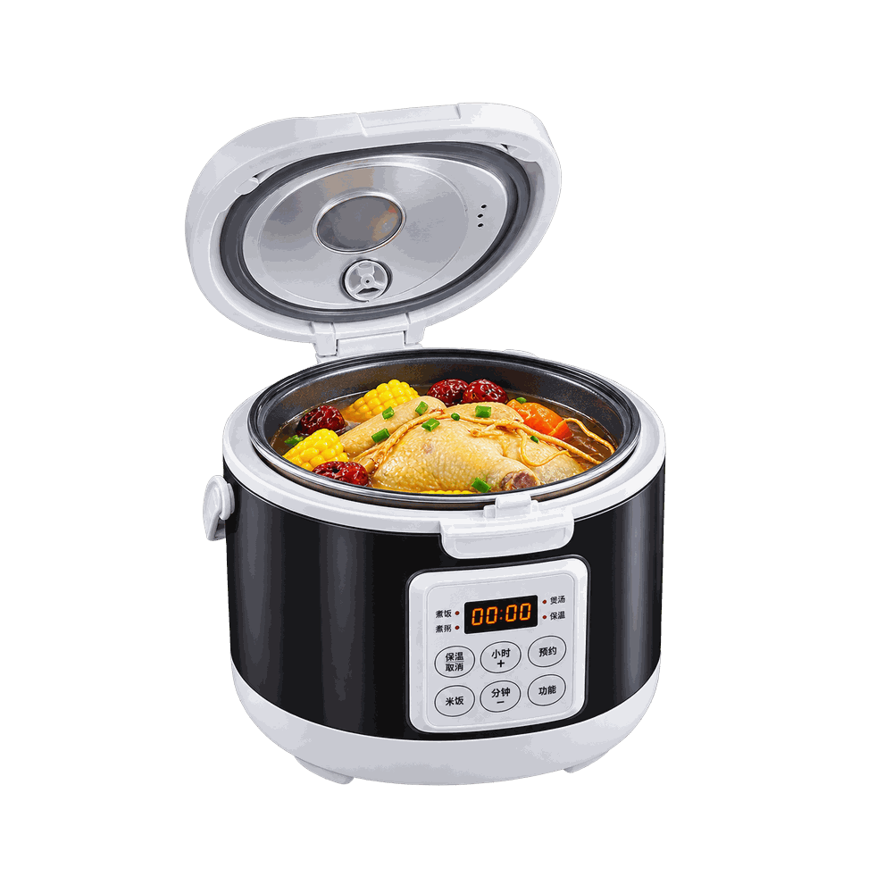
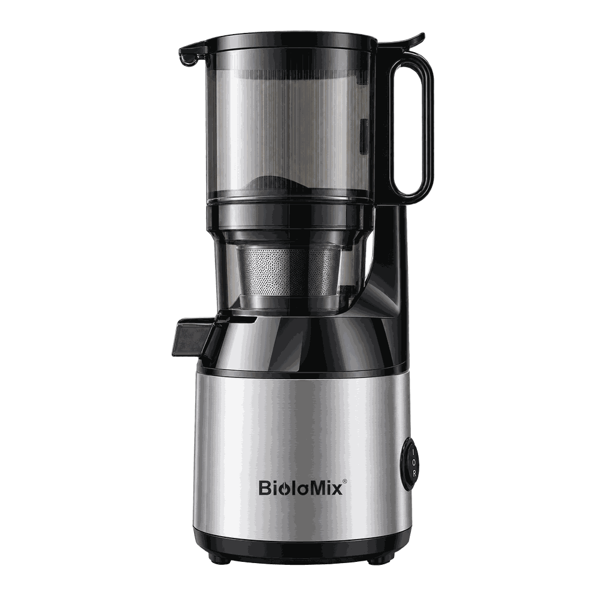

-1%
Maison pratique
Cuiseur à riz électrique 12V/24V/220V 3L
Cuiseur à riz électrique 12V/24V/220V 3L — sélectionné dans la catégorie Maison pratique.
60,90 €61,28 €

BioloMix Presse à froid Ju479 — sélectionné dans la catégorie Maison pratique.
Prix indicatif au moment de la mise à jour (10/09/2026). Le prix final, la livraison et les taxes peuvent varier sur AliExpress.
Clicly peut recevoir une commission si vous achetez ce produit via ce lien, sans coût supplémentaire pour vous.
Ce produit correspond à un appareil ou un accessoire qui simplifie une tâche du quotidien à la maison. Il peut convenir à celles et ceux qui veulent gagner du temps sur les tâches ménagères ou en cuisine. L'analyse ci-dessous s'appuie sur les caractéristiques annoncées par le vendeur et les informations publiques disponibles au 10/09/2026.
Nous n'avons pas testé ce produit directement. Cette analyse est basée sur les caractéristiques annoncées, les informations disponibles et les avis visibles au moment de la rédaction. Vérifiez toujours les détails sur la page du vendeur avant l'achat.
Un choix qui peut se justifier si vous cherchez un appareil ou un accessoire qui simplifie une tâche du quotidien à la maison et que les caractéristiques annoncées correspondent à votre besoin. Vérifiez les avis récents, les dimensions ou la compatibilité, et le délai de livraison affiché sur la page AliExpress avant de valider votre achat.